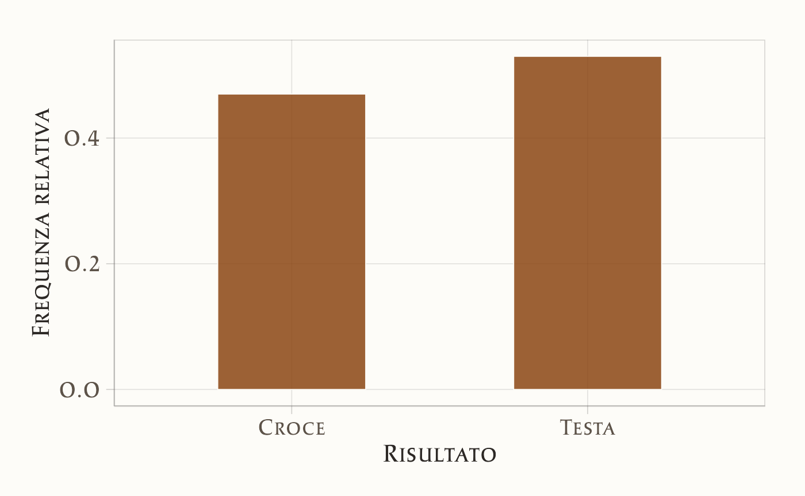
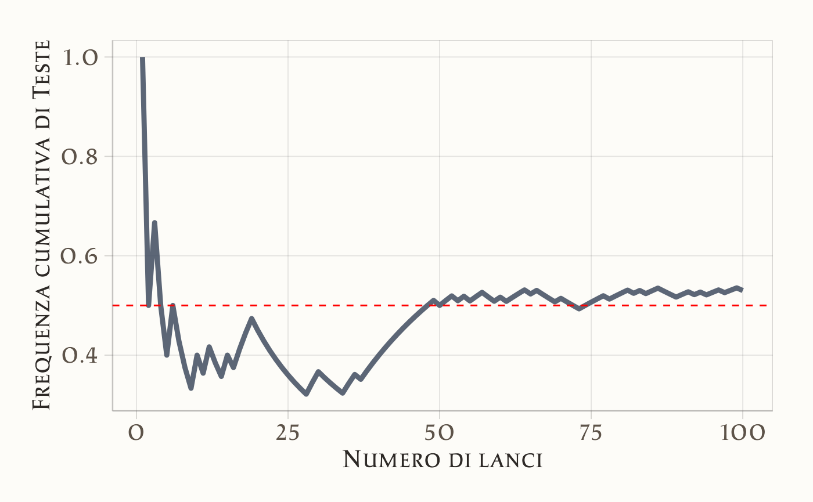
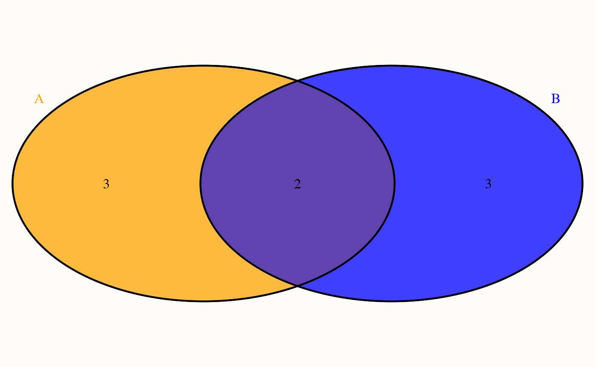
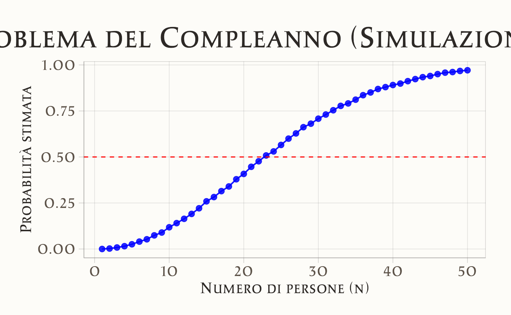

here::here("code", "_common.R") |>
source()
# Load packages
if (!requireNamespace("pacman")) install.packages("pacman")
pacman::p_load(readr, VennDiagram)26 Modelli probabilistici
In questo capitolo imparerai a
- comprendere come gli esperimenti casuali possono essere modellati matematicamente e come tale modellizzazione ci permetta di calcolare diverse proprietà di interesse per questi esperimenti.
Prerequisiti
- Leggere il capitolo Probability Models del testo di Chan & Kroese (2025).
- Studiare l’Appendice G.
- Studiare l’Appendice H.
Preparazione del Notebook
26.1 Introduzione
Dopo aver esaminato il significato filosofico della probabilità nel Capitolo 25, questo capitolo ne sviluppa una trattazione più formale, creando un collegamento tra la riflessione teorica e gli strumenti operativi. Partendo dalla definizione di esperimento casuale – come il lancio di una moneta o la somministrazione di un test psicologico – costruiremo un framework matematico per analizzare e quantificare le proprietà di tali esperimenti. In particolare, approfondiremo i concetti di spazio campionario, eventi e proprietà della probabilità, fornendo le basi per un’interpretazione rigorosa dei fenomeni complessi in psicologia e nelle scienze sociali.
Domande introduttive
Prima di esaminare in maniera più formale le basi della teoria della probabilità, consideriamo un classico problema della teoria della probabilità:
🔍 “Quante persone servono in una stanza perché ci sia almeno il 50% di probabilità che due condividano lo stesso compleanno?”
Questo problema, noto come problema dei compleanni, fu introdotto dal matematico Richard von Mises nel 1932. La sua soluzione sfida l’intuizione e rivela quanto le probabilità combinatorie possano essere ingannevoli.
Rispondi alle seguenti domande.
- Con quante persone pensi si superi il 50% di probabilità? (23? 100? 180?)
- Con 30 persone, quale probabilità stimi? (10%? 50%? 70%?)
Scrivi le tue risposte su un foglietto senza condividere con i compagni.
Per svolgere un esercizio in classe, compila il seguente modulo su Google Forms.
26.2 Esperimenti Casuali
Il concetto fondamentale della probabilità è l’esperimento casuale, ovvero un procedimento il cui esito non può essere previsto con certezza, ma che può essere analizzato quantitativamente. Alcuni esempi di esperimenti casuali includono:
- Lanciare un dado e osservare il numero ottenuto sulla faccia superiore.
- Estrarre una carta a caso da un mazzo e registrarne il seme e il valore.
- Misurare il livello di stress percepito da un gruppo di individui in un determinato contesto, come durante un esame o un evento stressante.
- Contare il numero di risposte corrette fornite dai partecipanti a un test di memoria entro un tempo prestabilito.
- Selezionare casualmente 50 persone e determinare quante mostrano una predisposizione alla creatività, misurata attraverso un questionario standardizzato.
- Scegliere a caso dieci individui e valutare il loro grado di introversione mediante uno strumento di autovalutazione psicologica.
- Selezionare casualmente 50 persone e contare quante sono mancine.
- Scegliere a caso dieci individui e misurarne l’altezza.
L’analisi probabilistica ha lo scopo di comprendere il comportamento di tali esperimenti attraverso la costruzione di modelli matematici. Una volta formalizzato matematicamente un esperimento casuale, è possibile calcolare grandezze di interesse, come probabilità ed aspettative. Questi modelli possono essere implementati al computer per simulare l’esperimento e analizzarne i risultati. Inoltre, la modellizzazione matematica degli esperimenti casuali costituisce la base della statistica, disciplina che permette di confrontare diversi modelli e identificare quello più adeguato ai dati osservati.
26.2.1 Il Lancio di una Moneta
Uno degli esperimenti casuali più semplici e fondamentali è il lancio ripetuto di una moneta. Molti concetti chiave della teoria della probabilità possono essere illustrati partendo da questo esperimento elementare. Per studiarne il comportamento, possiamo simularlo al computer utilizzando il linguaggio R.
Di seguito, un semplice script in R simula 100 lanci di una moneta equa (cioè con probabilità uguali di ottenere Testa o Croce) e rappresenta graficamente la distribuzione dei risultati mediante un diagramma a barre.
set.seed(123) # Imposta il seed per garantire la riproducibilità
x <- runif(100) < 0.5 # Genera 100 numeri casuali e verifica se sono minori di 0.5
x
#> [1] TRUE FALSE TRUE FALSE FALSE TRUE FALSE FALSE FALSE TRUE FALSE
#> [12] TRUE FALSE FALSE TRUE FALSE TRUE TRUE TRUE FALSE FALSE FALSE
#> [23] FALSE FALSE FALSE FALSE FALSE FALSE TRUE TRUE FALSE FALSE FALSE
#> [34] FALSE TRUE TRUE FALSE TRUE TRUE TRUE TRUE TRUE TRUE TRUE
#> [45] TRUE TRUE TRUE TRUE TRUE FALSE TRUE TRUE FALSE TRUE FALSE
#> [56] TRUE TRUE FALSE FALSE TRUE FALSE TRUE TRUE TRUE FALSE TRUE
#> [67] FALSE FALSE FALSE TRUE FALSE FALSE FALSE TRUE TRUE TRUE TRUE
#> [78] FALSE TRUE TRUE TRUE FALSE TRUE FALSE TRUE TRUE FALSE FALSE
#> [89] FALSE TRUE TRUE FALSE TRUE FALSE TRUE TRUE FALSE TRUE TRUE
#> [100] FALSENel codice, la funzione runif genera 100 numeri casuali distribuiti uniformemente nell’intervallo [0, 1]. Confrontando ciascun numero con 0.5, otteniamo un vettore logico che rappresenta il risultato di ogni lancio: Testa (TRUE) o Croce (FALSE).
Il grafico a barre mostra la distribuzione osservata degli esiti.
# Creazione del grafico a barre della distribuzione dei risultati
dat |>
ggplot(aes(x = Risultato)) +
geom_bar(aes(y = after_stat(prop), group = 1),
fill = "lightblue", color = "black", width = 0.5) +
labs(
title = "Distribuzione dei risultati del lancio della moneta",
x = "Risultato",
y = "Frequenza relativa"
)
Un aspetto rilevante di questo esperimento è l’andamento della proporzione osservata di esiti “Testa” in funzione del numero di lanci. Il grafico riportato di seguito illustra l’evoluzione della media cumulativa degli esiti “Testa”, che, in accordo con la legge dei grandi numeri, dovrebbe convergere al valore teorico di 0.5.
y <- cumsum(x) / t # Calcola la media cumulativa delle Teste
# Creazione del dataframe per il grafico della media mobile
data_mean <- tibble(
Lancio = t,
Media_Testa = y
)
# Creazione del grafico della media cumulativa
data_mean |>
ggplot(
aes(x = Lancio, y = Media_Testa)
) +
geom_line(linewidth = 1.5) +
geom_hline(yintercept = 0.5, linetype = "dashed", color = "red") +
labs(
title = "Media cumulativa del numero di Teste",
x = "Numero di lanci",
y = "Frequenza cumulativa di Teste"
)
Media cumulata
La media cumulata (o cumulativa) è una media che si calcola progressivamente, aggiungendo un nuovo dato alla volta e ricalcolando la media considerando tutti i valori precedenti insieme al nuovo.
In pratica, mostra come la media si evolve man mano che vengono inclusi nuovi dati nella serie.
Come si calcola?
- Al primo dato, la media cumulata è il dato stesso.
- Al secondo dato, è la media tra il primo e il secondo.
- Al terzo dato, è la media tra il primo, il secondo e il terzo.
- E così via…
Formula intuitiva:
\[ \text{Media cumulata al passo } n = \frac{\text{somma di tutti i dati fino al passo } n}{n} \]
Esempio pratico:
Supponiamo di avere i voti di uno studente in 3 verifiche:
- Verifica 1: 7
- Verifica 2: 6
- Verifica 3: 8
Le medie cumulate saranno:
- Dopo la 1ª verifica: \(\frac{7}{1} = 7\).
- Dopo la 2ª verifica: \(\frac{7 + 6}{2} = 6.5\).
- Dopo la 3ª verifica: \(\frac{7 + 6 + 8}{3} = 7\).
A cosa serve?
-
Tracciare l’andamento nel tempo (es.: mostrare come la frequenza di “Testa” si avvicina gradualmente al 50% teorico man mano che aumentano i lanci).
-
Lisciare le fluttuazioni: riduce l’impatto di picchi temporanei, mostrando un trend più stabile.
-
Valutare prestazioni progressive (es.: un atleta che migliora gradualmente).
Il grafico mostra come la media delle Teste oscilla inizialmente a causa della variabilità intrinseca dell’esperimento, ma tende progressivamente a stabilizzarsi intorno a 0.5. Questo fenomeno è un esempio della Legge dei Grandi Numeri, secondo cui, ripetendo un esperimento casuale un numero sempre maggiore di volte, la frequenza relativa di un evento si avvicina alla sua probabilità teorica.
26.2.2 Domande di Interesse
L’esperimento casuale del lancio di una moneta porta a numerose domande, tra cui:
- Qual è la probabilità di ottenere un certo numero \(x\) di Teste in 100 lanci?
- Qual è il numero atteso di Teste in un esperimento di 100 lanci?
Dal punto di vista statistico, quando osserviamo i risultati di un esperimento reale (ad esempio, 100 lanci di una moneta), possiamo anche porci domande come:
- La moneta è davvero equa o è sbilanciata?
- Qual è il miglior metodo per stimare la probabilità \(p\) di ottenere Testa dalla sequenza osservata di lanci?
- Quanto è precisa la stima ottenuta e con quale livello di incertezza?
Questi interrogativi costituiscono la base della statistica inferenziale, che permette di testare ipotesi sulla probabilità di un evento e stimare parametri sconosciuti sulla base di dati osservati.
26.2.3 Modellizzazione
La descrizione matematica di un esperimento casuale si basa su tre elementi fondamentali:
Lo spazio campionario: rappresenta l’insieme di tutti i possibili esiti dell’esperimento. Nel caso di esperimenti semplici, lo spazio campionario è immediato da individuare, mentre in situazioni più complesse è necessario applicare i principi del calcolo combinatorio.
Gli eventi: sono sottoinsiemi dello spazio campionario e rappresentano gli esiti di interesse. Per analizzare e manipolare gli eventi, utilizziamo gli strumenti della teoria degli insiemi.
La probabilità: assegna un valore numerico a ciascun evento, indicando la sua probabilità di verificarsi. L’assegnazione delle probabilità avviene secondo gli assiomi di Kolmogorov.
Nei paragrafi seguenti, analizzeremo ciascuna di queste componenti in dettaglio.
26.3 Spazio Campionario
Anche se non possiamo prevedere con esattezza l’esito di un singolo esperimento casuale, possiamo comunque definire tutti i risultati che potrebbero verificarsi. L’insieme completo di questi esiti possibili si chiama spazio campionario.
Definizione 26.1 Lo spazio campionario \(\Omega\) di un esperimento casuale è l’insieme di tutti i possibili esiti dell’esperimento.
26.3.1 Esempi di Spazi Campionari
Consideriamo lo spazio campionario di alcuni esperimenti casuali.
Lancio di due dadi consecutivi: \[ \Omega = \{(1,1), (1,2), \dots, (6,6)\}. \]
Tempo di reazione a uno stimolo visivo: \[\Omega = \mathbb{R}^+,\] ovvero l’insieme dei numeri reali positivi.
Numero di errori in un test di memoria a breve termine: \[\Omega = \{0, 1, 2, \dots\}.\]
Misurazione delle altezze di dieci persone: \[\Omega = \{(x_1, \dots, x_{10}) : x_i \ge 0, \; i=1,\dots,10\} \subset \mathbb{R}^{10}.\]
26.4 Eventi
Solitamente non siamo interessati a un singolo esito, ma a un insieme di essi. Un evento è un sottoinsieme dello spazio campionario a cui possiamo assegnare una probabilità.
Definizione 26.2 Un evento è un sottoinsieme \(A \subseteq \Omega\) al quale viene assegnata una probabilità. Indichiamo gli eventi con lettere maiuscole \(A, B, C, \dots\). Diciamo che l’evento \(A\) si verifica se l’esito dell’esperimento appartiene a \(A\).
26.4.1 Esempi di Eventi
Consideriamo alcuni possibili eventi definiti sugli spazi campionari descritti sopra.
Lancio di due dadi consecutivi.
Evento: “La somma dei due dadi è uguale a 7”
\[ A = \{(1,6), (2,5), (3,4), (4,3), (5,2), (6,1)\}. \]Tempo di reazione a uno stimolo visivo.
Evento: “Il tempo di reazione è inferiore a 2 secondi”
\[ A = [0, 2). \]Numero di errori in un test di memoria a breve termine.
Evento: “Il numero di errori è al massimo 3”
\[ A = \{0, 1, 2, 3\}. \]Misurazione delle altezze di dieci persone.
Evento: “Almeno due persone hanno un’altezza superiore a 180 cm”
\[ A = \{(x_1, \dots, x_{10}) : \text{almeno due } x_i > 180\}. \]
Questi esempi mostrano come gli eventi possano essere definiti in modo diverso a seconda della natura dello spazio campionario e del contesto di interesse.
Esempio 26.1 Supponiamo di lanciare una moneta tre volte e di annotare se esce Testa (\(H\)) o Croce (\(T\)) in ogni lancio. Lo spazio campionario è:
\[ \Omega = \{HHH, HHT, HTH, HTT, THH, THT, TTH, TTT\}, \]
dove, ad esempio, \(HTH\) indica che il primo lancio dà Testa, il secondo Croce e il terzo Testa.
Un’alternativa è rappresentare lo spazio campionario come l’insieme dei vettori binari di lunghezza 3, \(\{0,1\}^3\), dove Testa (\(H\)) corrisponde a 1 e Croce (\(T\)) a 0.
L’evento \(A\) “il terzo lancio è Testa” si esprime come:
\[ A = \{HHH, HTH, THH, TTH\}. \]
26.5 Operazioni sugli Eventi
Poiché gli eventi sono definiti come insiemi, possiamo applicare loro le classiche operazioni insiemistiche.
Unione (\(\cup\)). L’unione di due eventi \(A\) e \(B\) è l’insieme di tutti gli esiti che appartengono almeno a uno dei due:
\[ A \cup B = \{\omega \in \Omega : \omega \in A \text{ oppure } \omega \in B\}. \]
Intersezione (\(\cap\)). L’intersezione di due eventi è l’insieme degli esiti comuni:
\[ A \cap B = \{\omega \in \Omega : \omega \in A \text{ e } \omega \in B\}. \]
Complemento (\(A^c\)). Il complemento di un evento \(A\) è l’insieme di tutti gli esiti che non appartengono ad \(A\):
\[ A^c = \{\omega \in \Omega : \omega \notin A\}. \]
Eventi mutuamente esclusivi. Due eventi sono mutuamente esclusivi se non hanno esiti in comune, ovvero:
\[ A \cap B = \emptyset. \]
Esempio 26.2
# Universo
U <- 1:10
# Definizione degli insiemi A e B
A <- c(1, 2, 3, 4, 5)
B <- c(4, 5, 6, 7, 8)
# Calcolare l'unione, l'intersezione e il complemento relativo a un universo U
union_AB <- union(A, B)
intersect_AB <- intersect(A, B)
complement_A <- setdiff(U, A)
complement_B <- setdiff(U, B)
# Visualizzazione testuale
cat("Unione A ∪ B:", union_AB, "\n")
#> Unione A ∪ B: 1 2 3 4 5 6 7 8
cat("Intersezione A ∩ B:", intersect_AB, "\n")
#> Intersezione A ∩ B: 4 5
cat("Complemento di A:", complement_A, "\n")
#> Complemento di A: 6 7 8 9 10
cat("Complemento di B:", complement_B, "\n")
#> Complemento di B: 1 2 3 9 10# Visualizzazione con diagrammi di Venn
venn.plot <- draw.pairwise.venn(
area1 = length(A),
area2 = length(B),
cross.area = length(intersect_AB),
category = c("A", "B"),
fill = c("blue", "red"),
alpha = 0.5,
cat.col = c("blue", "red")
)
grid.draw(venn.plot)
26.5.1 Proprietà Fondamentali delle Operazioni su Eventi
Idempotenza: \[ A \cup A = A, \quad A \cap A = A. \]
Leggi di De Morgan: \[ (A \cup B)^c = A^c \cap B^c, \quad (A \cap B)^c = A^c \cup B^c. \]
Unione e Intersezione con l’insieme vuoto: \[ A \cup \emptyset = A, \quad A \cap \emptyset = \emptyset. \]
Unione e Intersezione con lo spazio campionario: \[ A \cup \Omega = \Omega, \quad A \cap \Omega = A. \]
Queste operazioni forniscono la base per costruire e manipolare eventi in contesti probabilistici, permettendo di calcolare probabilità e prendere decisioni basate sull’analisi degli esiti possibili.
Esempio 26.3 Per gli insiemi definiti nell’esempio precedente, possiamo verificare la prima legge di De Morgan in R confrontando il complemento dell’unione con l’intersezione dei complementi:
- complemento dell’unione: \((A \cup B)^c\),
- intersezione dei complementi: \(A^c \cap B^c\).
Eseguiamo i calcoli in R:
Secondo la legge di De Morgan, i due risultati devono coincidere.
Esempio 26.4 Consideriamo l’esperimento del lancio di due dadi. Lo spazio campionario \(\Omega\) è costituito da tutte le possibili coppie di risultati che possono verificarsi. Ogni dado ha 6 facce, quindi lo spazio campionario è:
\[ \Omega = \{(1,1), (1,2), \dots, (6,6)\}, \]
per un totale di \(6 \times 6 = 36\) esiti possibili.
Siamo interessati all’evento \(A\): “la somma dei due dadi è almeno 10”. Questo evento include tutte le coppie di risultati la cui somma è 10, 11 o 12. Gli esiti che soddisfano questa condizione sono:
\[ A = \{(4,6), (5,5), (5,6), (6,4), (6,5), (6,6)\}. \]
Ecco come generare lo spazio campionario in R in modo algoritmico e definire l’evento “la somma dei due dadi è almeno 10”:
Lo spazio campionario \(\Omega\) è costituito da tutte le possibili coppie di risultati del lancio di due dadi. In R, possiamo generarlo utilizzando la funzione expand.grid, che crea tutte le combinazioni possibili tra i valori dei due dadi.
# Generazione dello spazio campionario Omega
dado <- 1:6 # Facce di un dado
Omega <- expand.grid(Dado1 = dado, Dado2 = dado) # Tutte le combinazioni possibiliL’output sarà una tabella con 36 righe, una per ogni combinazione possibile:
# Visualizzazione dello spazio campionario
print(Omega)
#> Dado1 Dado2
#> 1 1 1
#> 2 2 1
#> 3 3 1
#> 4 4 1
#> 5 5 1
#> 6 6 1
#> 7 1 2
#> 8 2 2
#> 9 3 2
#> 10 4 2
#> 11 5 2
#> 12 6 2
#> 13 1 3
#> 14 2 3
#> 15 3 3
#> 16 4 3
#> 17 5 3
#> 18 6 3
#> 19 1 4
#> 20 2 4
#> 21 3 4
#> 22 4 4
#> 23 5 4
#> 24 6 4
#> 25 1 5
#> 26 2 5
#> 27 3 5
#> 28 4 5
#> 29 5 5
#> 30 6 5
#> 31 1 6
#> 32 2 6
#> 33 3 6
#> 34 4 6
#> 35 5 6
#> 36 6 6L’evento \(A\) è definito come “la somma dei due dadi è almeno 10”. Per identificare queste combinazioni, aggiungiamo una colonna che calcola la somma dei due dadi e filtriamo le righe in cui la somma è maggiore o uguale a 10.
# Aggiunta di una colonna per la somma dei due dadi
Omega$Somma <- Omega$Dado1 + Omega$Dado2
# Definizione dell'evento A: somma dei due dadi almeno 10
A <- Omega[Omega$Somma >= 10, ]L’output sarà un data frame con le combinazioni in cui la somma è almeno 10:
# Visualizzazione dell'evento A
print(A)
#> Dado1 Dado2 Somma
#> 24 6 4 10
#> 29 5 5 10
#> 30 6 5 11
#> 34 4 6 10
#> 35 5 6 11
#> 36 6 6 12In sintesi,
- lo spazio campionario \(\Omega\) è stato generato algoritmicamente utilizzando
expand.grid; - l’evento \(A\) è stato definito filtrando le combinazioni in cui la somma dei due dadi è almeno 10.
Esempio 26.5 Consideriamo un esperimento in cui lanciamo una moneta tre volte consecutivamente. Ogni lancio può risultare in Testa (H) o Croce (T). Lo spazio campionario \(\Omega\) è costituito da tutte le possibili sequenze di risultati dei tre lanci. Ci sono \(2^3 = 8\) possibili esiti, che possono essere rappresentati come:
\[ \Omega = \{\text{HHH}, \text{HHT}, \text{HTH}, \text{HTT}, \text{THH}, \text{THT}, \text{TTH}, \text{TTT}\}. \]
Vogliamo definire in R l’evento \(A\): “Il terzo lancio della moneta dia Testa (H)”. Questo evento include tutte le sequenze in cui il terzo carattere è “H”.
In R, possiamo rappresentare lo spazio campionario \(\Omega\) come un vettore di stringhe, dove ogni stringa corrisponde a una sequenza di risultati.
# Definizione dello spazio campionario Omega
omega <- c("HHH", "HHT", "HTH", "HTT", "THH", "THT", "TTH", "TTT")
omega
#> [1] "HHH" "HHT" "HTH" "HTT" "THH" "THT" "TTH" "TTT"L’evento \(A\) è costituito da tutte le sequenze in cui il terzo lancio è Testa (H). Per identificare queste sequenze, utilizziamo la funzione substr, che estrae il terzo carattere da ciascuna stringa e verifica se è uguale a “H”.
# Definizione dell'evento A: terzo lancio è Testa (H)
A <- omega[substr(omega, 3, 3) == "H"]Spiegazione del codice:
-
substr(omega, 3, 3)estrae il terzo carattere da ciascuna stringa nel vettoreomega. -
substr(omega, 3, 3) == "H"crea un vettore logico (vero/falso) che indica se il terzo carattere è “H”. -
omega[...]filtra il vettoreomega, mantenendo solo le sequenze che soddisfano la condizione.
L’output sarà:
# Visualizzazione dell'evento A
A
#> [1] "HHH" "HTH" "THH" "TTH"Queste sono le sequenze in cui il terzo lancio è Testa (H).
In sintesi,
- lo spazio campionario \(\Omega\) è stato definito come un vettore di stringhe in R;
- l’evento \(A\) è stato costruito filtrando le sequenze in cui il terzo carattere è “H”, utilizzando la funzione
substr(x, start, stop); - l’evento \(A\) corrisponde alle sequenze: HHH, HTH, THH, TTH.
Questo esercizio illustra come definire e manipolare eventi in R, utilizzando operazioni di base su stringhe e vettori.
Esempio 26.6 Consideriamo l’esperimento del lancio consecutivo di due dadi. Lo spazio campionario \(\Omega\) è costituito da tutte le possibili coppie di risultati:
\[ \Omega = \{(1, 1), (1, 2), \dots, (6, 6)\}. \]
Definiamo due eventi:
Evento \(A\): “Il primo dado mostra un 6”.
Questo evento include tutte le coppie in cui il primo dado è 6:
\[ A = \{(6, 1), (6, 2), (6, 3), (6, 4), (6, 5), (6, 6)\}. \]Evento \(B\): “Il secondo dado mostra un 6”.
Questo evento include tutte le coppie in cui il secondo dado è 6:
\[ B = \{(1, 6), (2, 6), (3, 6), (4, 6), (5, 6), (6, 6)\}. \]
L’intersezione \(A \cap B\) rappresenta l’evento in cui entrambi i dadi mostrano un 6:
\[ A \cap B = \{(6, 6)\}. \]
Implementazione in R
Per analizzare gli eventi legati al lancio di due dadi, utilizziamo R per simulare lo spazio campionario e manipolare gli eventi.
1. Generazione dello spazio campionario
La funzione expand.grid crea tutte le combinazioni possibili tra gli elementi di due vettori. Nel nostro caso, generiamo tutte le coppie (Dado1, Dado2):
# Definizione delle facce dei dadi (1-6)
dado <- 1:6
# Creazione di tutte le 36 combinazioni possibili
Omega <- expand.grid(
Dado1 = dado,
Dado2 = dado
)
# Visualizzazione delle prime 6 righe
head(Omega)
#> Dado1 Dado2
#> 1 1 1
#> 2 2 1
#> 3 3 1
#> 4 4 1
#> 5 5 1
#> 6 6 12. Definizione degli eventi
Evento A - “Primo dado = 6”:
Filtriamo le righe dove la colonna Dado1 è uguale a 6:
A <- Omega[Omega$Dado1 == 6, ] # Selezione condizionale
print("Evento A:")
#> [1] "Evento A:"
A
#> Dado1 Dado2
#> 6 6 1
#> 12 6 2
#> 18 6 3
#> 24 6 4
#> 30 6 5
#> 36 6 6Evento B - “Secondo dado = 6”:
Filtriamo le righe dove la colonna Dado2 è uguale a 6:
B <- Omega[Omega$Dado2 == 6, ]
print("Evento B:")
#> [1] "Evento B:"
B
#> Dado1 Dado2
#> 31 1 6
#> 32 2 6
#> 33 3 6
#> 34 4 6
#> 35 5 6
#> 36 6 63. Calcolo dell’intersezione A ∩ B
Metodo 1: Funzione intersect()
La funzione base intersect() confronta intere righe tra due dataframe e restituisce quelle comuni:
Metodo 2: Funzione merge()
La funzione base merge() esegue una join naturale sulle colonne con lo stesso nome:
Metodo 3: Pacchetto dplyr
La funzione inner_join() mantiene solo le righe presenti in entrambi i dataframe:
In sintesi,
- lo spazio campionario \(\Omega\) è stato generato algoritmicamente in R;
- gli eventi \(A\) e \(B\) sono stati definiti filtrando lo spazio campionario;
- l’intersezione \(A \cap B\) corrisponde all’evento in cui entrambi i dadi mostrano un 6: \(\{(6, 6)\}.\)
26.6 Probabilità
Il terzo elemento fondamentale del modello probabilistico è la funzione di probabilità, che quantifica numericamente la possibilità di occorrenza degli eventi.
Definizione 26.3 Una probabilità \(P\) è una funzione \(P: \mathcal{F} \to [0,1]\) definita su una \(\sigma\)-algebra \(\mathcal{F}\) di sottoinsiemi di \(\Omega\). A ogni evento \(A \in \mathcal{F}\), la funzione assegna un valore reale compreso tra 0 e 1, rispettando i seguenti assiomi di Kolmogorov:
Non-negatività
Per ogni \(A \subseteq \Omega\), si richiede che \(0 \leq P(A) \leq 1\).Normalizzazione (evento certo)
\(P(\Omega) = 1\).Additività numerabile
Se \(A_1, A_2, \dots\) sono eventi mutuamente esclusivi (cioè \(A_i \cap A_j = \emptyset\) per \(i \neq j\)), allora: \[ P\!\Bigl(\bigcup_{i=1}^{\infty} A_i\Bigr) \;=\; \sum_{i=1}^{\infty} P(A_i). \]
In altre parole, una misura di probabilità non solo assegna numeri nell’intervallo \([0,1]\) a ogni evento, ma richiede che l’evento “certo” \(\Omega\) abbia probabilità 1 e che la probabilità di un’unione numerabile di eventi disgiunti sia la somma delle loro probabilità. Queste condizioni garantiscono la coerenza formale e l’interpretazione intuitiva del concetto di probabilità.
26.6.1 Interpretazione degli Assiomi di Kolmogorov
Assioma 1 (Non-negatività e limiti 0–1)
La probabilità di un evento è sempre un numero reale compreso tra 0 e 1. Se la probabilità è 0, l’evento può considerarsi impossibile; se è 1, l’evento è certo.
Esempio: Nel lancio di un dado a sei facce, l’evento “Esce 7” non può verificarsi e ha probabilità 0, mentre l’evento “Esce un numero tra 1 e 6” ha probabilità 1.Assioma 2 (Evento certo)
Lo spazio campionario \(\Omega\) è l’insieme di tutti i possibili esiti dell’esperimento. Poiché in ogni prova deve accadere almeno uno degli esiti contenuti in \(\Omega\), la probabilità di \(\Omega\) è necessariamente 1.
Esempio: Nel lancio di un dado, lo spazio campionario \(\Omega\) è \(\{1,2,3,4,5,6\}\). L’evento “esce un numero tra 1 e 6” coincide con l’intero spazio campionario, quindi \(P(\Omega) = 1\).Assioma 3 (Additività per eventi incompatibili)
Se due o più eventi sono mutuamente esclusivi (o incompatibili) — cioè non possono verificarsi contemporaneamente — la probabilità della loro unione è la somma delle probabilità di ciascuno.
Esempio: Con un dado, l’evento “esce un numero pari” e l’evento “esce un numero dispari” non possono verificarsi nello stesso lancio. Di conseguenza,
\[ P(\text{“pari”} \cup \text{“dispari”}) \;=\; P(\text{“pari”}) + P(\text{“dispari”})\,. \]
Questi assiomi assicurano che la probabilità, intesa come funzione che assegna valori tra 0 e 1 a ogni evento, rispetti la coerenza matematica e l’interpretazione intuitiva: non esistono eventi “negativi” o “più che certi”, e la probabilità totale dell’intero spazio dei possibili risultati deve sempre essere uguale a 1.
26.6.2 Proprietà Fondamentali
Dagli assiomi di Kolmogorov discendono alcune proprietà fondamentali che descrivono come la probabilità si comporti in varie situazioni. Le principali sono elencate di seguito.
Teorema 26.1 Siano \(A\) e \(B\) eventi qualsiasi nello spazio campionario \(\Omega\). Allora valgono le seguenti relazioni:
Probabilità dell’evento impossibile
\[ P(\emptyset) = 0. \] Poiché l’insieme vuoto non include alcun esito sperimentale, non può mai verificarsi.Monotonicità
\[ A \subseteq B \quad \Longrightarrow \quad P(A) \le P(B). \] Se un evento è interamente contenuto in un altro, non può avere probabilità maggiore dell’evento che lo comprende.Probabilità del complementare
\[ P(A^c) = 1 - P(A). \] Poiché \(A\) e il suo complementare \(A^c\) coprono l’intero spazio \(\Omega\), la probabilità di \(A^c\) è la parte “rimanente” fino a 1.Regola dell’inclusione–esclusione
\[ P(A \cup B) \;=\; P(A) + P(B) \;-\; P(A \cap B). \] Per calcolare la probabilità dell’unione di due eventi qualsiasi, si sommano le probabilità di ciascun evento e si sottrae la probabilità della loro intersezione (altrimenti verrebbe conteggiata due volte).
26.7 Spazi Discreti vs. Continui
La natura dello spazio campionario determina come definiamo e calcoliamo le probabilità. Distinguiamo i due casi fondamentali: lo spazio campionario discreto
\[ \Omega = \{a_1, a_2, \dots, a_n\} \quad \text{oppure} \quad \Omega = \{a_1, a_2, \dots\} \]
e lo spazio campionario continuo
\[ \Omega = \mathbb{R} . \]
26.7.1 Spazi Campionari Discreti
Caratteristiche:
- Gli esiti sono numerabili (finiti o infiniti ma separabili).
- Esempi:
- Lancio di un dado: \(\Omega = \{1, 2, 3, 4, 5, 6\}\).
- Numero di clienti in un negozio in un’ora: \(\Omega = \{0, 1, 2, \dots\}\).
- Lancio di un dado: \(\Omega = \{1, 2, 3, 4, 5, 6\}\).
Definizione di Probabilità:
-
Assegniamo una probabilità puntuale \(p_i \geq 0\) a ogni esito \(\omega_i\), con:
\[ \sum_{\text{tutti gli } i} p_i = 1 \quad \text{(normalizzazione)}. \]
-
La probabilità di un evento \(A\) si ottiene sommando le probabilità degli esiti in \(A\):
\[ P(A) = \sum_{\omega_i \in A} p_i. \]
Esempio 26.7 Lancio di un dado equilibrato:
- Ogni faccia ha probabilità \(p_i = \frac{1}{6}\).
- Sia \(A = \text{"Esce un numero pari"}\).
- Allora:
\[ P(A) = p_2 + p_4 + p_6 = \frac{1}{6} + \frac{1}{6} + \frac{1}{6} = \frac{3}{6} = \frac{1}{2}. \]
26.7.2 Spazi Campionari Continui
Caratteristiche:
- Gli esiti sono non numerabili (infiniti e “densi”).
- Esempi:
- Tempo di attesa all’autobus: \(\Omega = [0, \infty)\).
- Altezza di una persona: \(\Omega = [50\, \text{cm}, 250\, \text{cm}]\).
- Tempo di attesa all’autobus: \(\Omega = [0, \infty)\).
Definizione di Probabilità:
- Usiamo una funzione di densità di probabilità (PDF) \(f(x) \geq 0\), con:
\[ \int_{-\infty}^{\infty} f(x)\, dx = 1 \quad \text{(normalizzazione)}. \]
- La probabilità di un evento \(A\) si ottiene integrando la PDF su \(A\):
\[ P(A) = \int_{A} f(x)\, dx. \]
Esempio 26.8 Misurazione dell’altezza degli uomini adulti, modellata come variabile aleatoria continua \(X\) (in cm) con distribuzione normale \(\mathcal{N}(170, 7^2)\) (si veda la Sezione Capitolo 38):
-
Media: \(\mu = 170\) cm
- Deviazione standard: \(\sigma = 7\) cm
La funzione di densità (PDF) corrispondente è:
\[ f(x) = \frac{1}{7\sqrt{2\pi}} \exp\!\Bigl(-\frac{(x - 170)^2}{2 \cdot 7^2}\Bigr), \quad X \sim \mathcal{N}(170,\, 7^2). \]
Evento di interesse:
\[
A = \text{“Altezza compresa tra 160 cm e 180 cm”}.
\]
Calcolo della probabilità:
La probabilità di \(A\) è l’area sotto la curva della densità tra 160 cm e 180 cm:
\[ P(A) \;=\; \int_{160}^{180} \frac{1}{7\sqrt{2\pi}} \exp\!\Bigl(-\frac{(x - 170)^2}{98}\Bigr)\,\mathrm{d}x. \]
In alternativa, si può scrivere:
\[ P(160 \leq X \leq 180) \;\approx\; 0.847 \quad (84.7\%). \]
Più avanti vedremo come calcolare facilmente questa probabilità tramite R, ad esempio con il comando:
Questo codice restituisce la differenza tra le funzioni di ripartizione (CDF) a 180 e a 160, corrispondente proprio all’area desiderata sotto la PDF.
26.7.3 Confronto Chiave
| Caratteristica | Spazio Discreto | Spazio Continuo |
|---|---|---|
| Esiti | Numerabili (es: 1, 2, 3) | Non numerabili (es: intervalli) |
| Probabilità di un singolo punto | \(P(\{\omega_i\}) = p_i\) (\(\geq\) 0) | \(P(\{x\}) = 0\) (sempre zero) |
| Strumento matematico | Somma \(\sum\) | Integrale \(\int\) |
| Esempi comuni | Dadi, monete, conteggi | Misure fisiche, tempi, temperature |
Proprietà della PDF
- Negli spazi continui, la PDF non è una probabilità (può essere > 1), ma la sua area sottesa su un intervallo fornisce la probabilità.
- Per eventi continui, ha senso solo calcolare probabilità su intervalli (es: \(P(160 \leq X \leq 180)\)).
26.8 Dai Concetti Base alle Proprietà Fondamentali della Probabilità
Abbiamo visto come un esperimento casuale possa essere formalizzato matematicamente attraverso tre elementi chiave:
- Spazio campionario (\(\Omega\)): l’insieme di tutti i possibili esiti dell’esperimento.
- Eventi: sottoinsiemi di \(\Omega\) che rappresentano combinazioni di esiti di interesse.
- Probabilità: una funzione \(P\) che assegna a ogni evento un valore numerico compreso tra 0 e 1, misurandone il grado di verosimiglianza.
Partendo da queste definizioni, è possibile derivare proprietà essenziali per il calcolo e l’analisi probabilistica. Queste proprietà consentono di determinare la probabilità di eventi complessi a partire da eventi elementari e di stabilire relazioni logiche tra di essi.
In questo corso, approfondiremo quattro teoremi fondamentali:
- teorema della somma;
- teorema del prodotto;
- teorema della probabilità totale;
- teorema di Bayes.
L’introduzione di operazioni sugli eventi (unione, intersezione, complemento) e delle proprietà della probabilità (teorema della somma, probabilità condizionata, teorema della probabilità totale, …) ci consente di costruire modelli probabilistici più complessi e applicabili a problemi reali.
Qui di seguito, approfondiamo il teorema della somma.
26.9 Teorema della Somma
Il teorema della somma (o regola additiva) permette di determinare la probabilità che si verifichi almeno uno tra due eventi \(A\) e \(B\). La sua formulazione dipende dalla relazione tra i due eventi:
Caso 1: Eventi Mutuamente Esclusivi. Se \(A\) e \(B\) non possono verificarsi insieme (ossia \(A \cap B = \emptyset\)), la probabilità dell’unione è la somma delle singole probabilità:
\[ P(A \cup B) = P(A) + P(B). \tag{26.1}\]
Caso 2: Eventi Non Esclusivi. Se \(A\) e \(B\) possono coesistere, è necessario evitare di contare due volte la loro intersezione:
\[ P(A \cup B) = P(A) + P(B) - P(A \cap B). \tag{26.2}\]
Perché questa differenza?
La probabilità è una funzione d’insieme coerente con le operazioni insiemistiche. L’addizione diretta \(P(A) + P(B)\) conteggia due volte gli esiti comuni a \(A\) e \(B\) (rappresentati da \(A \cap B\)). La sottrazione di \(P(A \cap B)\) garantisce che ogni esito sia considerato una sola volta.
Il teorema della somma sottolinea come le operazioni logiche tra eventi (unione, intersezione) si riflettano in relazioni algebriche tra le loro probabilità, fornendo uno strumento operativo per modellare scenari reali.
Esempio 26.9 In uno studio sulla salute mentale, supponiamo di avere i seguenti dati relativi a un campione di partecipanti:
- la probabilità che un individuo soffra di ansia è \(P(A) = 0.30\);
- la probabilità che un individuo soffra di depressione è \(P(B) = 0.25\);
- la probabilità che un individuo soffra contemporaneamente di ansia e depressione è \(P(A \cap B) = 0.15\).
Vogliamo calcolare la probabilità che un individuo soffra di almeno uno dei due disturbi (ansia o depressione), ovvero \(P(A \cup B)\).
Utilizziamo la regola della somma per eventi non mutuamente esclusivi:
\[ P(A \cup B) = P(A) + P(B) - P(A \cap B) \]
Svolgiamo questo calcolo in R:
# Definiamo le probabilità
P_A <- 0.30 # Probabilità di soffrire di ansia
P_B <- 0.25 # Probabilità di soffrire di depressione
P_A_intersect_B <- 0.15 # Probabilità di soffrire di entrambi i disturbi
# Applichiamo la formula della regola della somma
P_A_union_B <- P_A + P_B - P_A_intersect_B
P_A_union_B
#> [1] 0.4Interpretazione: il 40% dei partecipanti soffre di almeno uno tra ansia e depressione. L’intersezione \(P(A \cap B) = 0.15\) è fondamentale, poiché senza sottrarla avremmo contato due volte i soggetti che soffrono contemporaneamente di entrambi i disturbi.
26.10 Probabilità, Calcolo Combinatorio e Simulazioni
In molti problemi di probabilità, soprattutto quelli di taglio scolastico o introduttivo, si assume che ogni evento elementare abbia la stessa probabilità di verificarsi (equiprobabilità). In queste situazioni, il calcolo combinatorio risulta particolarmente utile per determinare la probabilità di un evento, poiché basta:
-
Definire gli eventi di successo: identificare tutte le configurazioni compatibili con l’evento di interesse.
- Contare le possibilità: calcolare il numero di eventi di successo e rapportarlo al numero totale di eventi nello spazio campionario.
Esempio 26.10 Estrazione di una pallina da un’urna
Supponiamo di avere un’urna con 10 palline numerate da 1 a 10, da cui estraiamo una sola pallina in modo casuale. Assumendo che ogni pallina abbia la stessa probabilità di essere estratta, calcoliamo la probabilità di estrarre un numero pari.
-
Eventi di successo: \(\{\;2, 4, 6, 8, 10\}\) (5 casi)
- Eventi totali: \(\{\;1, 2, 3, 4, 5, 6, 7, 8, 9, 10\}\) (10 casi)
La probabilità cercata è quindi:
\[ P(\text{numero pari}) \;=\; \frac{\text{numero di eventi di successo}}{\text{numero totale di eventi}} \;=\; \frac{5}{10} \;=\; 0.5. \]
Nelle applicazioni più complesse, come il calcolo della probabilità di ottenere una determinata combinazione di carte o il formare gruppi specifici partendo da una popolazione, utilizzeremo tecniche combinatorie più avanzate — ad esempio permutazioni e combinazioni (si veda la Sezione Appendice H) — che consentono di contare in modo sistematico gli eventi possibili e quelli di successo.
26.10.1 Simulazioni Monte Carlo
Uno degli aspetti più impegnativi della probabilità è che molti problemi non si prestano a soluzioni immediate o intuitive. Per affrontarli, si possono adottare due approcci principali. Il primo consiste nell’applicare i teoremi della teoria della probabilità, un metodo rigoroso ma spesso controintuitivo. Il secondo approccio è quello della simulazione Monte Carlo, che permette di ottenere una soluzione approssimata, ma molto vicina al valore reale, seguendo una procedura più accessibile e intuitiva. Questo metodo prende il nome dal famoso Casinò di Monte Carlo a Monaco, anche se può essere semplicemente definito come “metodo di simulazione.”
La simulazione Monte Carlo appartiene a una classe generale di metodi stocastici che si contrappongono ai metodi deterministici. Questi metodi consentono di risolvere approssimativamente problemi analitici attraverso la generazione casuale delle quantità di interesse. Tra le tecniche comunemente utilizzate troviamo il campionamento con reinserimento, in cui la stessa unità può essere selezionata più volte, e il campionamento senza reinserimento, dove ogni unità può essere selezionata una sola volta. Questi strumenti rappresentano un mezzo potente e pratico per affrontare problemi complessi.
26.10.2 Il Problema dei Complenni
Un esempio classico di applicazione del metodo Monte Carlo è il calcolo delle probabilità relative a vari eventi definiti attraverso il modello dell’urna. Tra questi, abbiamo il celebre problema dei compleanni.
Il problema dei compleanni esplora la probabilità che, in un gruppo di \(n\) persone, almeno due persone condividano la stessa data di nascita. Supponendo che i compleanni siano distribuiti uniformemente su 365 giorni (ignorando anni bisestili), il problema sorprende molte persone per il fatto che già con 23 persone la probabilità di una coincidenza è superiore al 50%.
26.10.2.1 Soluzione analitica
Questo problema può essere risolto utilizzando il concetto di probabilità complementari. Infatti, il problema può essere visto da due prospettive complementari:
- Caso 1: tutti i compleanni sono diversi (nessuna persona condivide il compleanno con un’altra);
- Caso 2: almeno due persone condividono lo stesso compleanno.
Questi due casi sono mutuamente esclusivi (non possono verificarsi contemporaneamente) ed esaustivi (coprono tutte le possibilità). Pertanto, la somma delle loro probabilità deve essere uguale a 1:
\[ P(\text{almeno un compleanno in comune}) = 1 - P(\text{nessun compleanno in comune}). \]
In altre parole, per calcolare la probabilità che almeno due persone abbiano lo stesso compleanno, possiamo prima calcolare la probabilità che tutti i compleanni siano diversi e poi sottrarre questo valore da 1.
Caso 1: probabilità che tutti i compleanni siano diversi.
Per calcolare \(P(\text{nessun compleanno in comune})\), seguiamo questo ragionamento:
Prima persona: Può scegliere liberamente un giorno del calendario. Ci sono 365 possibilità (ignoriamo gli anni bisestili per semplicità).
Seconda persona: Deve avere un compleanno diverso dalla prima persona. Quindi, ci sono 364 giorni disponibili.
Terza persona: Deve avere un compleanno diverso dai primi due. Ci sono 363 giorni disponibili.
Questo processo continua fino alla \(n\)-esima persona, che avrà \(365 - n + 1\) giorni disponibili.
La probabilità che tutti i compleanni siano diversi si ottiene moltiplicando le probabilità individuali di ogni persona di avere un compleanno diverso dai precedenti. Poiché ogni scelta è indipendente, possiamo scrivere:
\[ P(\text{nessun compleanno in comune}) = \frac{365}{365} \cdot \frac{364}{365} \cdot \frac{363}{365} \cdot \ldots \cdot \frac{365-n+1}{365}. \]
Questo prodotto può essere espresso in forma compatta utilizzando il fattoriale:
\[ P(\text{nessun compleanno in comune}) = \frac{365!}{(365-n)! \cdot 365^n} , \]
dove:
- \(365!\) è il fattoriale di 365 (il prodotto di tutti i numeri interi da 1 a 365).
- \((365-n)!\) è il fattoriale di \(365 - n\).
- \(365^n\) rappresenta tutte le possibili combinazioni di compleanni per \(n\) persone.
Caso 2. Probabilità di almeno un compleanno in comune.
Ora che abbiamo calcolato la probabilità che tutti i compleanni siano diversi, possiamo trovare la probabilità che almeno due persone abbiano lo stesso compleanno come il complemento:
\[ P(\text{almeno un compleanno in comune}) = 1 - P(\text{nessun compleanno in comune}). \]
Sostituendo l’espressione precedente, otteniamo:
\[ P(\text{almeno un compleanno in comune}) = 1 - \frac{365!}{(365-n)! \cdot 365^n}. \]
Ora che abbiamo le formule per i due eventi complementari, come funzione di \(n\), applichiamole al caso specifico in cui \(n\) = 23. Questo è un valore interessante perché, come vedremo, la probabilità che almeno due persone su 23 condividano lo stesso compleanno supera il 50%.
La formula per la probabilità che tutti i compleanni siano diversi è:
\[ P(\text{nessun compleanno in comune}) = \frac{365!}{(365-n)! \cdot 365^n}. \]
Per \(n = 23\), sostituiamo il valore nella formula:
\[ P(\text{nessun compleanno in comune}) = \frac{365!}{(365-23)! \cdot 365^{23}}. \]
Semplifichiamo:
\[ P(\text{nessun compleanno in comune}) = \frac{365!}{342! \cdot 365^{23}}. \]
Utilizzando R, troviamo:
\[ P(\text{nessun compleanno in comune}) \approx 0.4927. \]
Ciò significa che la probabilità che tutte le 23 persone abbiano compleanni diversi è circa 0.4927.
La probabilità che almeno due persone su 23 condividano lo stesso compleanno è il complemento della probabilità calcolata sopra:
\[ P(\text{almeno un compleanno in comune}) = 1 - P(\text{nessun compleanno in comune}). \]
Sostituendo il valore trovato:
\[ P(\text{almeno un compleanno in comune}) = 1 - 0.4927 = 0.5073. \]
Ciò significa che la probabilità che almeno due persone su 23 abbiano lo stesso compleanno è circa 0.5073.
Con \(n\) = 23, dunque, la probabilità che almeno due persone condividano lo stesso compleanno supera il 50%. Questo risultato è spesso controintuitivo, poiché molte persone si aspettano che servano molte più persone per raggiungere una probabilità così alta. Tuttavia, grazie alla natura combinatoria del problema, bastano 23 persone per avere una probabilità superiore al 50%.
26.10.2.2 Soluzione con Simulazione in R
Per risolvere il problema tramite simulazione, possiamo generare gruppi casuali di \(n\) persone, assegnando loro un compleanno casuale tra 1 e 365. Per ogni gruppo, verifichiamo se almeno due persone condividono lo stesso compleanno.
Ecco il codice R:
# Numero di simulazioni
num_simulazioni <- 10000
# Funzione per simulare il problema del compleanno
simula_compleanno <- function(n) {
# Conta il numero di successi (almeno un compleanno in comune)
successi <- 0
# Loop per il numero di simulazioni
for (i in 1:num_simulazioni) {
# Genera n compleanni casuali
compleanni <- sample(1:365, n, replace = TRUE)
# Verifica se ci sono duplicati
if (any(duplicated(compleanni))) {
successi <- successi + 1
}
}
# Calcola la probabilità stimata
return(successi / num_simulazioni)
}Proviamo con diversi valori di n.
set.seed(123) # Fissiamo il seme per la riproducibilità
risultati <- sapply(1:50, simula_compleanno)
# Creiamo un data frame con i risultati
df <- data.frame(
n = 1:50,
prob = risultati
)
# Creiamo il grafico
ggplot(df, aes(x = n, y = prob)) +
geom_line(color = "blue") +
geom_point(color = "blue") +
geom_hline(yintercept = 0.5, color = "red", linetype = "dashed") +
labs(
x = "Numero di persone (n)",
y = "Probabilità stimata",
title = "Problema del Compleanno (Simulazione)"
)
- Simulazioni: Per ogni gruppo di \(n\), si eseguono 10000 simulazioni, in cui si generano \(n\) compleanni casuali tra 1 e 365.
- Duplicati: La funzione duplicated() verifica se ci sono compleanni ripetuti.
- Calcolo della probabilità: La proporzione di simulazioni in cui si verifica almeno un compleanno condiviso rappresenta la probabilità stimata.
- Visualizzazione: Si tracciano le probabilità per diversi valori di \(n\), evidenziando il punto in cui la probabilità supera il 50%.
Risultati attesi:
- con circa 23 persone, la probabilità stimata sarà superiore a 0.5;
- il grafico mostra una curva crescente con un rapido aumento della probabilità per \(n\) piccoli e un asintoto vicino a 1 per \(n\) grandi.
Questo approccio permette di comprendere intuitivamente il problema e di verificare i risultati teorici con la simulazione.
26.10.2.3 Assunzioni
Il problema dei compleanni evidenzia non solo l’efficacia dell’approccio simulativo nel semplificare la soluzione rispetto all’analisi formale, ma anche l’importanza delle assunzioni che entrambi i metodi condividono. In questo caso, l’assunzione è che la probabilità di nascita sia uniformemente distribuita nei 365 giorni dell’anno — un’ipotesi semplificativa che non rispecchia la realtà.
Questo esempio sottolinea un principio fondamentale dei modelli probabilistici (e scientifici in generale): ogni modello si basa su un insieme di assunzioni che ne delimitano la validità e l’applicabilità. Valutare criticamente la plausibilità di tali assunzioni è dunque essenziale per garantire che il modello fornisca una rappresentazione utile del fenomeno studiato.
26.11 Riflessioni Conclusive
La teoria della probabilità fornisce un quadro rigoroso per descrivere e analizzare fenomeni caratterizzati dall’incertezza. In questo capitolo abbiamo introdotto i concetti fondamentali del calcolo delle probabilità, evidenziando come la modellazione matematica degli esperimenti casuali consenta di quantificare e prevedere eventi incerti. Abbiamo esplorato strumenti essenziali come la definizione di spazio campionario, la nozione di evento e le regole della probabilità, illustrando il loro utilizzo sia attraverso esempi teorici sia mediante simulazioni computazionali.
Un aspetto cruciale della modellazione probabilistica è il ruolo delle assunzioni su cui si basano i modelli. Ogni modello probabilistico si fonda su ipotesi specifiche riguardanti la natura del fenomeno studiato e il modo in cui gli esiti vengono generati. Queste ipotesi determinano non solo la validità del modello, ma anche il tipo di risposte che esso può fornire. Ad esempio, nel problema del compleanno, abbiamo ipotizzato che i compleanni siano distribuiti in modo uniforme nei 365 giorni dell’anno. Sebbene questa assunzione semplifichi notevolmente i calcoli, sappiamo che nella realtà esistono fluttuazioni stagionali nelle nascite che possono influenzare le probabilità effettive.
Questo ci porta a una considerazione più ampia: la probabilità non è solo un insieme di formule, ma uno strumento per rappresentare l’incertezza e prendere decisioni informate. Tuttavia, l’accuratezza di qualsiasi modello probabilistico dipende strettamente dalla plausibilità delle ipotesi adottate. Modelli diversi, basati su ipotesi differenti, possono portare a risultati diversi, e l’interpretazione dei risultati deve sempre tenere conto di queste assunzioni.
In definitiva, lo studio della probabilità non si limita alla manipolazione di formule, ma richiede un’attenta riflessione sulla relazione tra modelli teorici e fenomeni reali. Una comprensione critica delle assunzioni alla base di un modello è essenziale per applicare correttamente i concetti probabilistici in contesti pratici, sia in ambito scientifico che nelle decisioni quotidiane.
Risposte alle domande iniziali
Il 92% delle persone sovrastima il numero necessario per la prima domanda e sottostima la seconda probabilità. Questo problema mostra come l’intuizione umana fallisca con eventi apparentemente “rari”.
- La risposta è 23 persone.
- La probabilità è \(\sim 0.7\)
26.12 Esercizi
Esercizio
Qui di seguito sono presentati una serie di esercizi sbasati sulla Satisfaction with Life Scale (SWLS).
Esercizi sullo Spazio Campionario e Eventi
-
Definizione dello Spazio Campionario
Supponiamo che i punteggi della Satisfaction with Life Scale (SWLS) siano numeri interi compresi tra 5 e 35.- Qual è lo spazio campionario \(\Omega\) per questo esperimento?
- Se hai raccolto i dati di 15 studenti, come potresti rappresentare lo spazio campionario con i loro punteggi osservati?
-
Definizione di un Evento
Consideriamo l’evento A: “Uno studente ha un punteggio SWLS superiore a 25”.- Esprimi l’evento A come un sottoinsieme dello spazio campionario.
- Se tra i 15 studenti osservati, 4 hanno punteggi superiori a 25, qual è la proporzione sperimentale per l’evento A?
-
Eventi Complementari
Definiamo l’evento B: “Uno studente ha un punteggio SWLS inferiore o uguale a 25”.- Scrivi l’evento B in relazione all’evento A.
- Qual è la probabilità empirica di B, sapendo che 4 studenti hanno punteggi superiori a 25?
Esercizi sulle Operazioni tra Eventi
-
Unione di Eventi
Definiamo due eventi:-
A: “Il punteggio SWLS è superiore a 25”.
-
C: “Il punteggio SWLS è inferiore a 15”.
- Scrivi l’evento A ∪ C (“Lo studente ha un punteggio maggiore di 25 o minore di 15”).
- Se nel campione di 15 studenti, 4 studenti hanno punteggi superiori a 25 e 3 hanno punteggi inferiori a 15, qual è la proporzione empirica di A ∪ C?
-
A: “Il punteggio SWLS è superiore a 25”.
-
Intersezione di Eventi e Eventi Disgiunti
Supponiamo che l’evento D sia: “Uno studente ha un punteggio pari a 20”.- L’evento D e l’evento A sono disgiunti?
- Se nessuno degli studenti ha ottenuto esattamente 20, qual è la probabilità empirica di A ∩ D?
Esercizi sulle Regole della Probabilità 6. Probabilità dell’Unione di Eventi
Supponiamo di avere:
-
P(A) = 0.3 (probabilità che un punteggio sia superiore a 25).
-
P(C) = 0.2 (probabilità che un punteggio sia inferiore a 15).
-
P(A ∩ C) = 0 (perché un punteggio non può essere contemporaneamente superiore a 25 e inferiore a 15).
- Usa la regola dell’unione per calcolare P(A ∪ C).
-
Probabilità Condizionata
Consideriamo:-
P(A) = 0.3 (probabilità che un punteggio sia superiore a 25).
-
P(E) = 0.5 (probabilità che uno studente abbia più di 20 anni).
-
P(A | E) = 0.4 (probabilità che un soggetto con più di 20 anni abbia un punteggio superiore a 25).
- Usa la formula della probabilità condizionata per calcolare P(A ∩ E).
-
P(A) = 0.3 (probabilità che un punteggio sia superiore a 25).
Esercizi su Permutazioni e Combinazioni
-
Selezione Casuale di Studenti
Dal campione di 15 studenti, supponiamo di voler selezionare casualmente 3 studenti per partecipare a un’intervista sulla loro soddisfazione di vita.- Quanti modi ci sono per selezionare 3 studenti su 15?
-
Ordinare gli Studenti per Discussione
Supponiamo di voler formare un piccolo gruppo di discussione con 3 studenti, scegliendoli in ordine di intervento.- Quante diverse sequenze di 3 studenti possiamo ottenere?
Formare Coppie di Studenti
Se vogliamo formare coppie di studenti per un esercizio collaborativo, senza considerare l’ordine, quanti modi ci sono per farlo?
Soluzione
1. Definizione dello Spazio Campionario
-
Lo spazio campionario \(\Omega\) per questo esperimento è l’insieme di tutti i possibili punteggi della Satisfaction with Life Scale (SWLS), quindi:
\[ \Omega = \{5, 6, 7, ..., 35\} \]
Se abbiamo raccolto i dati di 15 studenti con punteggi osservati \(\{27, 21, 15, 30, 18, 23, 26, 35, 20, 22, 19, 25, 32, 29, 28\}\), possiamo considerare \(\Omega\) come questo insieme specifico.
2. Definizione di un Evento
-
L’evento \(A\) “Uno studente ha un punteggio SWLS superiore a 25” è il sottoinsieme:
\[ A = \{27, 30, 26, 35, 32, 29, 28\}\]
-
Se 7 studenti su 15 hanno punteggi superiori a 25, la probabilità empirica è:
\[ P(A) = \frac{7}{15} = 0.467 \]
3. Eventi Complementari
-
L’evento complementare \(B\) “Uno studente ha un punteggio SWLS inferiore o uguale a 25” è:
\[ B = \{21, 15, 18, 23, 20, 22, 19, 25\}\]
-
Se 8 studenti su 15 rientrano in \(B\), la probabilità empirica è:
\[ P(B) = 1 - P(A) = \frac{8}{15} = 0.533 \]
Soluzioni agli Esercizi sulle Operazioni tra Eventi
4. Unione di Eventi
-
L’evento \(A \cup C\) (“Lo studente ha un punteggio maggiore di 25 o minore di 15”) è:
\[ A \cup C = \{27, 30, 26, 35, 32, 29, 28, 15\}\]
-
Se 8 studenti su 15 appartengono a \(A \cup C\), la probabilità empirica è:
\[ P(A \cup C) = \frac{8}{15} = 0.533 \]
5. Intersezione di Eventi e Eventi Disgiunti
L’evento \(D\) “Uno studente ha un punteggio pari a 20” è \(D = \{20\}\).
-
L’evento \(A \cap D\) è l’insieme degli elementi comuni a \(A\) e \(D\), ma \(D\) non ha elementi in \(A\), quindi:
\[ A \cap D = \emptyset \]
Essendo \(A \cap D = \emptyset\), gli eventi sono disgiunti e \(P(A \cap D) = 0\).
Soluzioni agli Esercizi sulle Regole della Probabilità
6. Probabilità dell’Unione di Eventi
Usiamo la formula:
\[ P(A \cup C) = P(A) + P(C) - P(A \cap C) \]
Dato che \(P(A \cap C) = 0\), abbiamo:
\[ P(A \cup C) = 0.3 + 0.2 - 0 = 0.5 \]
7. Probabilità Condizionata
La probabilità congiunta \(P(A \cap E)\) si calcola con:
\[ P(A \cap E) = P(A | E) \cdot P(E) \]
Sostituendo i valori:
\[ P(A \cap E) = 0.4 \times 0.5 = 0.2 \]
Soluzioni agli Esercizi su Permutazioni e Combinazioni
8. Selezione Casuale di Studenti
Il numero di modi per scegliere 3 studenti su 15 (combinazioni) è:
\[ C_{15,3} = \frac{15!}{3!(15-3)!} = \frac{15!}{3!12!} = \frac{15 \times 14 \times 13}{3 \times 2 \times 1} = 455 \]
9. Ordinare gli Studenti per Discussione
Il numero di modi per scegliere e ordinare 3 studenti su 15 (disposizioni) è:
\[ D_{15,3} = \frac{15!}{(15-3)!} = \frac{15!}{12!} = 15 \times 14 \times 13 = 2730 \]
10. Formare Coppie di Studenti
Il numero di modi per formare coppie (combinazioni di 2 studenti su 15) è:
\[ C_{15,2} = \frac{15!}{2!(15-2)!} = \frac{15 \times 14}{2 \times 1} = 105 \]
Bibliografia
Chan, J. C. C., & Kroese, D. P. (2025). Statistical Modeling and Computation (2ª ed.). Springer.